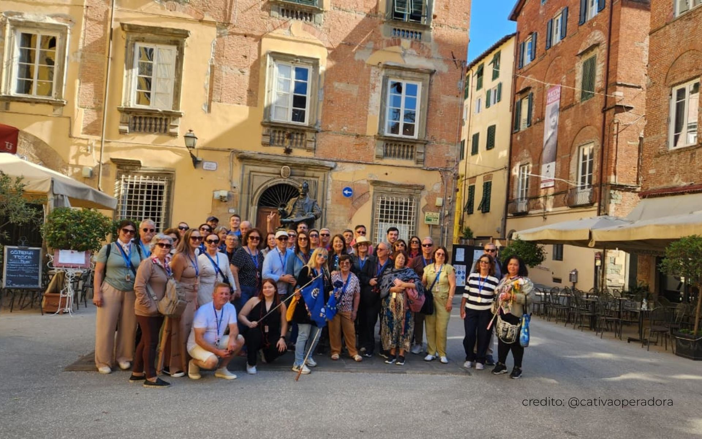
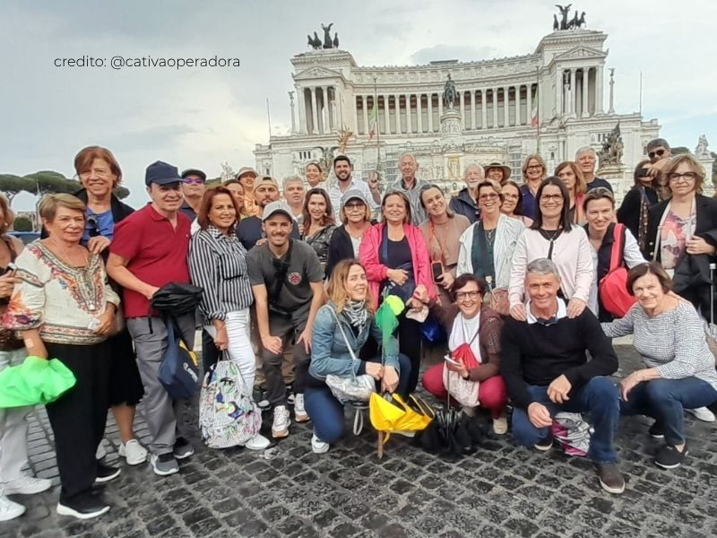
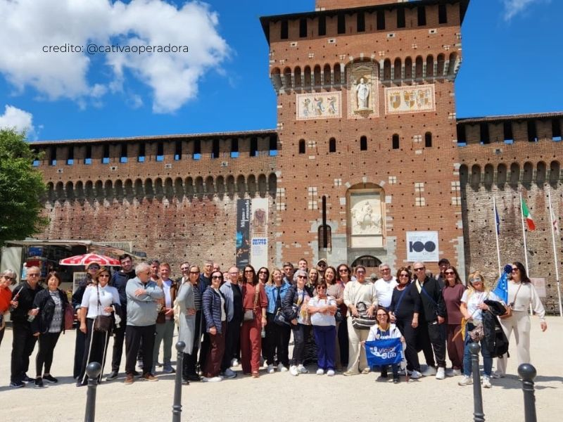
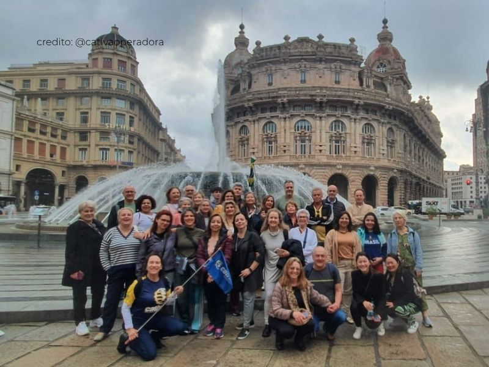
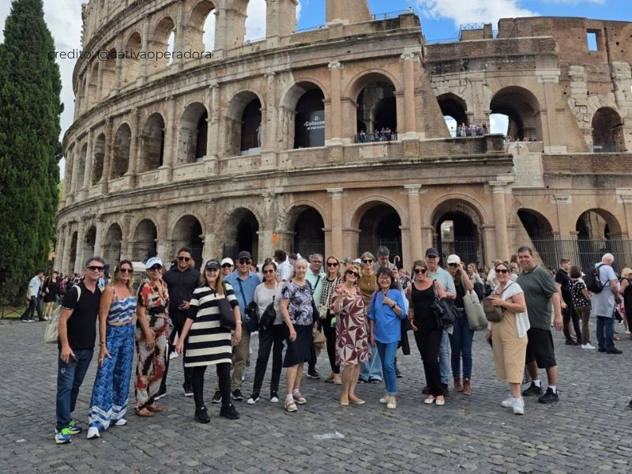
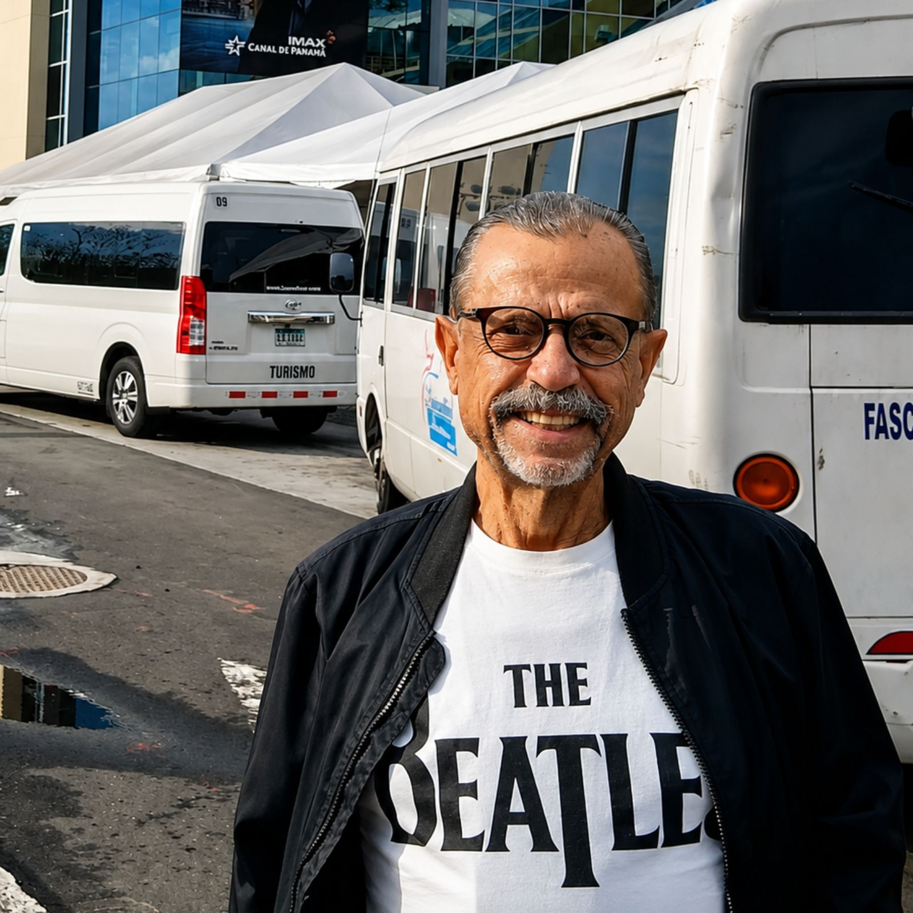
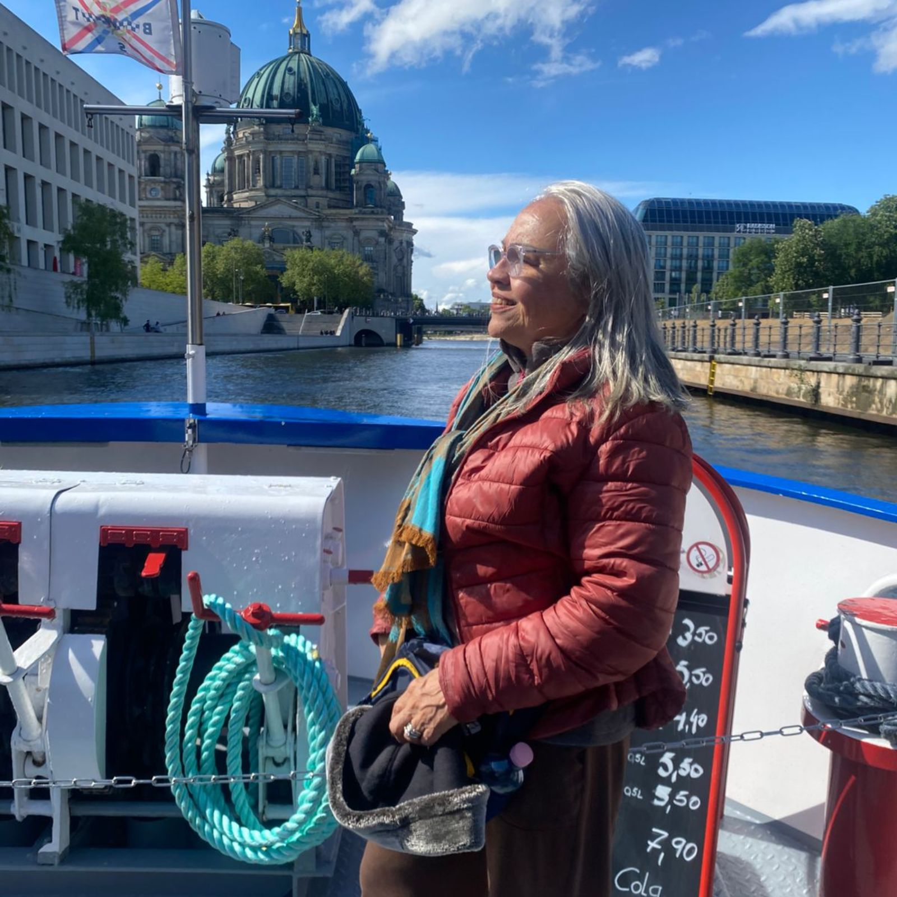
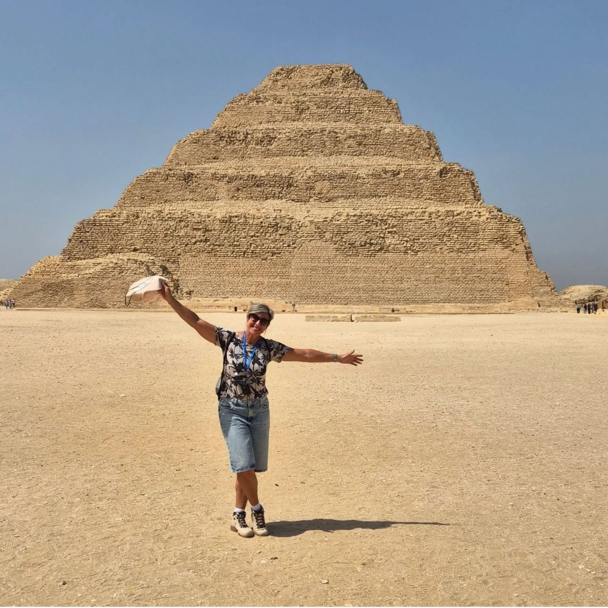
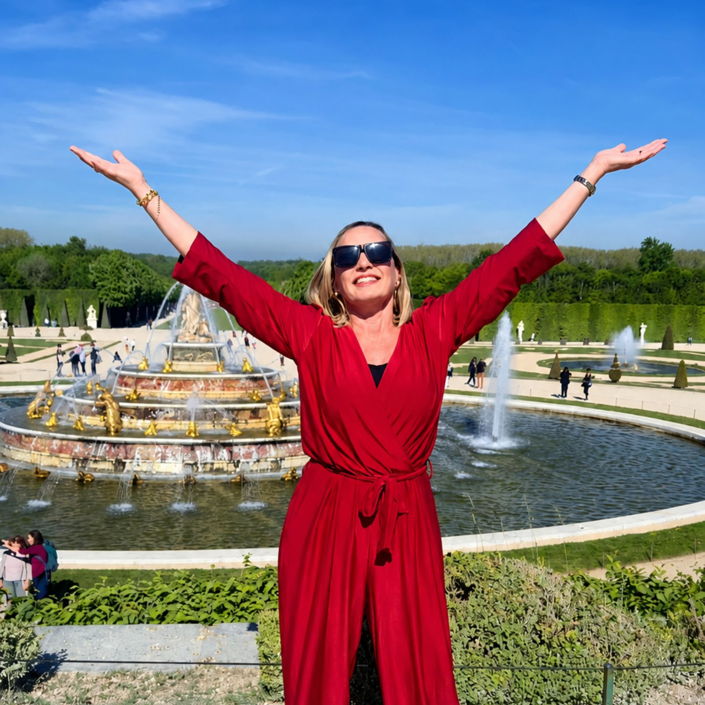
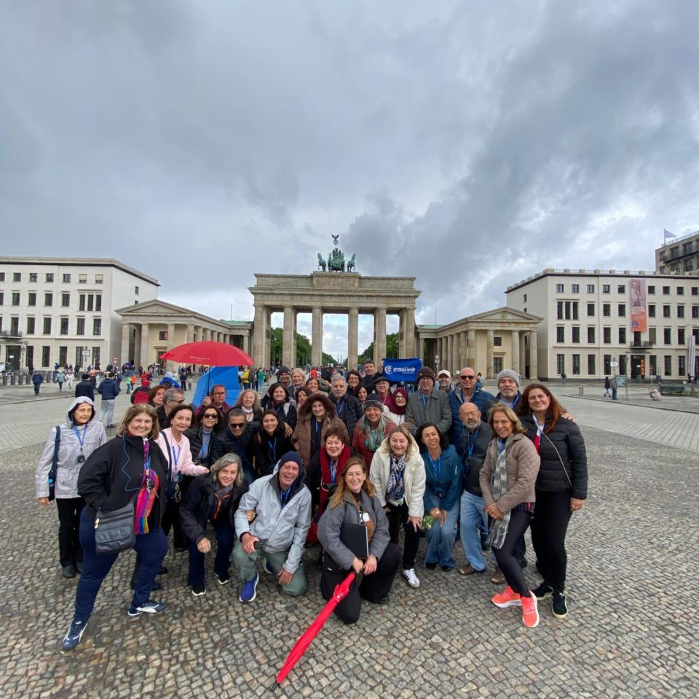

.png)
.png)
O roteiro em grupo mais completo pela Itália, com guia desde o Brasil: 16 dias por Milão, Cinque Terre, Toscana, Roma e Vaticano, Nápoles, Capri, Costa Amalfitana, Assis e Veneza.
Mais do que um roteiro de lugares, uma imersão em séculos de história, arte e sabor — dos vinhedos da Toscana às ruelas de Veneza, do Vaticano à Costa Amalfitana ao entardecer.

16 dias, 7 capítulos de uma Itália que vai da moda de Milão à espiritualidade de Assis.
Chegada e a elegância da capital da moda — city tour, Duomo e Galeria Vittorio Emanuele.
Riviera Ligure — Gênova e os vilarejos coloridos suspensos sobre o Mediterrâneo.
Renascença, vinhedos e a Torre Inclinada — Lucca, Pisa, Florença, San Gimignano e Siena.
Vaticano e Capela Sistina — ingressos inclusos para dois dos maiores tesouros da humanidade.
Nápoles, Capri, Sorrento, a deslumbrante Costa Amalfitana e as ruínas de Pompeia.
Espiritualidade no coração da Úmbria, na cidade de São Francisco.
O grand finale romântico — Pádua, os canais de Veneza, Verona e o Lago di Garda, antes do retorno ao Brasil.
Grupos de viajantes reais, guia acompanhante do Brasil e suporte completo do início ao fim.






Se você valoriza conforto, organização e companhia de qualidade, o Circuito Italiano foi desenhado pensando em você: roteiro sem correria, suporte completo e a segurança de viajar com quem entende do assunto há mais de 10 anos.

"Tenho 71 anos e adoro viajar. Não tenho medo nenhum de viajar sozinho — pego, bato a minha porta e vou na companhia da Girotrip. Sou apaixonado por música clássica. A Girotrip tem me ajudado muito. Nem eu sabia que era o meu sonho."Sidio Abel Trindade 35 países visitados · Canal do Panamá

"O grupo foi fantástico — um grupo excelente. Fui bem atendida pela Girotrip em todos os momentos. Não tive problema nenhum."Sandra Regina Ferreira Leste Europeu

"Esta foi a viagem dos meus sonhos. A gente foi muito bem atendida em todos os momentos. Já estou programando a próxima viagem com a Girotrip."Dalva Figueiredo 3ª viagem com a Girotrip · Egito

"Adorei a viagem, os lugares são lindos! Foi tudo muito bem organizado. Com certeza viajarei outras vezes com a Girotrip!"Jacqueline Constance Holanda, Flórida, Bélgica e França

"Viagem ótima, guias excelentes, hotéis com ótima localização. A viagem cumpriu com minhas expectativas. Vamos combinar a próxima!"Marilia Cristina Duarde de Mayo Leste Europeu